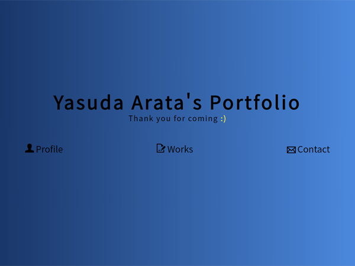
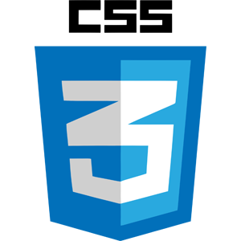

URL :
説明 :

このポートフォリオサイトは就職活動の為に作られました。
ポートフォリオサイトを作るうえでのメインコンセプトは「とにかくシンプル」です。
採用担当者様は日々多くの応募者を見極めるために多くのポートフォリオを見られていて、
応募者一人のポートフォリオを見る時間は限られていると思います。
その限られた時間の中で自分を見極めてもらえるよう、
メインページはシンプルでわかりやすく、下層ページではもう少し細かい詳細や
制作する際のこだわった点が分かるように作りました。
ファーストビューの部分は目線の動きに合わせ左から右へ明るくなる青のグラデーションをつけ、
黎明のような落ち着きながらも新しい事を予感させるようなイメージにしました。
ワンポイントのニコちゃんが可愛らしいですね。
今は中身が少なく必要性は低いですが作品数や文章量が増えることを考えページ内リンクもついています。

ポートフォリオを制作する上でスキルをアピールする際の自己評価として
最大★5つ等で評価されている方が時々おられると思うのですが、これについて私は未経験者や経験が浅い
応募者においてはあまり合理的ではないと考えています。
なおかつその信頼性の低い情報でポートフォリオ自体が見づらくなってしまうのではないかと考え、
そういった自己評価は表記しませんでした。その代わりにWorkや詳細ページの詳しい記載で
採用担当者様に判断していただけるよう作りました。
ここでもコンセプトの「とにかくシンプル」に会うようにアイコンのみで表記しています。
※一応ですが自信のある順でアイコンを配置しています。

ここではjquery等を用いてモーダルウィンドウのようにして詳細を出そうとも考えたのですが、
詳細をできるだけ詳しく書こうとすると文章量が多くなり、コンセプトの「とにかくシンプル」に
反してしまうと考え、下層ページで詳細を記載することにしました。
詳細ページでも「とにかくシンプル」を継承しつつも文章量が多くても読みやすいように
行間をすこし大きめにとっています。使用した技術が分かりやすいように下部↓のようにアイコンも記載しています。
使用技術 :

メインページへ